| 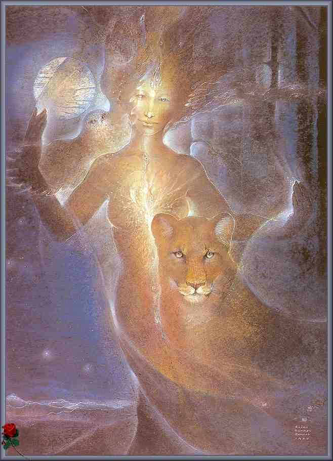 |
Nuvem que passa
|
|

 Volta
para
Índice da Tribo
Volta
para
Índice Themas Mágickos
Volta
para
Índice da Tribo
Volta
para
Índice Themas Mágickos

Instituto de Pesquisas Psíquicas Imagick
tel: 0xx.11.813.4123
Criado por:
Imagick Edições e
Comunicações Visuais
As Fases do Deus
| 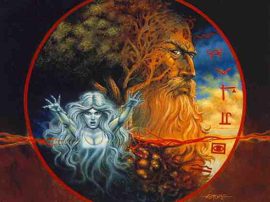 |
Olá...
Há alguns anos trabalhava com
um grupo de estudos interdisciplinares e estávamos focados na questão
da educação e das crises.
Um dos pontos em que todos concordávamos
era que a falta de ritos de passagem na nossa cultura é um dos fatores
responsáveis por tanta disincronicidade das pessoas com a vida.
Estes ritos de passagem, presentes
em toda sociedade tradicional, foram deixados de lado na nossa sociedade
e formalizados num esquema implícito que, no entanto, nada ajuda
as pessoas a se localizarem no caleidoscópico mundo que vivemos.
A mulher tem um momento forte na menarca,
ao surgir da menstruação. É muito intenso o processo
de ver sangue saindo do corpo e isso, como marca também a entrada
no período fértil, leva a alguma atenção.
| 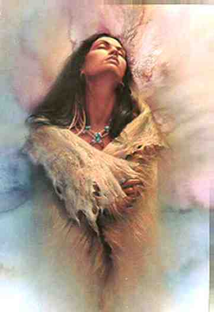 |
Nós homens, entretanto, passamos
por outras mudanças menos "chocantes", daí que grande
parte dos garotos passou para a fase adolescente e depois para a juventude
ingressando na maturidade com pouca ou nenhuma orientação
e percepção por parte dos que estavam a sua volta, a não
ser as tradicionais perturbações sobre a mudança de
voz e a "penugem " no rosto.
Tanto homem como mulher tem um primeiro
momento : infância.
Nesta fase a energia plena se manifesta
na construção de seus corpos.
Para muitos pais este mistério
diário do crescimento dos corpos é apenas a dor de cabeça
de comprar calçados e roupas que ficam pequenos após pouquíssimo
uso.
Mas nesta fase ali está o ser,
absorvendo toda a informação possível do meio circundante,
observando o jeito de ser dos que estão a sua volta.
Nesse período o agir dos que
estão a volta da criança pesa mais do que o que é
dito.
Os padrões mentais ainda estão
se desenvolvendo, só lá pelos 11 anos vamos chegar as portas
do racional operatório, portanto é o que a criança
sente a
sua volta que ela registra.
Não é tato o que falam,
mas o tom que usam que impressiona a criança. Não é
o discurso implícito que sensibiliza, é o discurso implícito,
os tons de voz
e as intenções reais que os adultos por
vezes nem mesmo percebem estar transmitindo, que sensibiliza a criança.
| 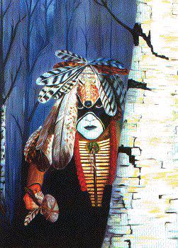 |
Por isso todo trabalho iniciático
rumo ao auto conhecimento tem uma fase na qual o(a) aprendiz é solicitado
a lembrar de seu lar natal, visitá-lo se
mais ali não vive, observar as pessoas que conviveram
consigo na sua infância, todas elas, pois muito do que julgamos ser
"nosso" é apenas "casca" apenas tendências, jeitos de ser
, pensar e sentir que absorvemos por imitação dos que estavam
a nossa volta, ou ainda, estilo de agir,
pensar e sentir que desenvolvemos como resposta as pressões
que o meio nos impôs.
Nessa fase o contato com elementais
e certos entes da natureza é direta e interessante, em muito ritos
abertos que fazemos aqui os filhos e filhas pequenos (as) de nossos (as)
companheiras de grupo percebem nitidamente as
forças evocadas e respondem as mesmas.
A criança tem como símbolo
em algumas tradições o MENINO DO PÓLEN, personagem
importante de tantos mitos nativos.
| 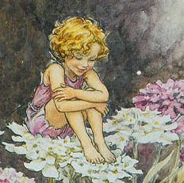 |
Assim, nós homens estamos no
primeiro momento de nossa vida, plenos e brincalhões, presentes
soltos e livres no mundo como o menino do pólen está.
Como o pólen solto a voar nos
campos somos uma promessa de tudo que podemos vir a ser.
Se uma criança nessa fase aprende
a se harmonizar com os quatro elementos e as quatro direções,
se evitamos que o medo e os conceitos moralistas e tacanhos do judaísmo/cristianismo
impregnem seu ser, estaremos honrando a face do Deus Menino, num nível
de culto muito importante, pois estaremos cultuando o Deus Menino vivo,
em cada criança que ajudamos, dentro de nossas possibilidades, a
ser plenamente criança e a não perder a ingenuidade que trazem
em si.
| 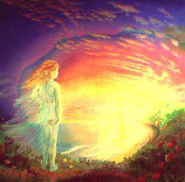 |
Ingenuidade não é tolice,
nem ignorância, é uma postura aberta perante a vida, sem nunca
perder a habilidade de admirar , de brincar com o mundo, com leveza e intensidade.
Então chega o momento da puberdade.
Algo começa a acontecer.
Uma parte a mais do corpo, que servia
só para fazer xixi, de repente começa a ficar mais forte
em seu apelo por atenção.
Não só ali, outras partes
do corpo também, mas especialmente naquela área algo ocorre.
Tocar aquela área se torna
algo diferente e quer sozinho, quer por sugestões ouvidas ou em
brincadeiras coletivas o menino descobre que tocar seu pênis é
prazeroso e aos poucos, de um líquido branco e ralo, vai surgindo
uma espessa e branca substância, que aparece num momento quando todo
seu corpo parece enlouquecer, provocando algo que se tornará uma
obsessão numa certa fase: O prazer!
| 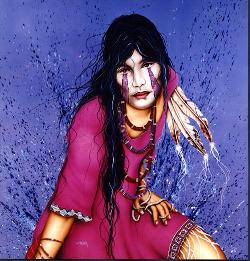 |
Que coisa inquietante este prazer.
Algo tão simples, manipular com intensidade e constância aquela
parte de seu corpo pode levar àquele clímax para o qual poucos
são preparados e a maioria aprende de forma deturpada e
escondida mais com amigos que em casa.
Algumas abordagens com professores
moralistas nas escolas ou conversas constrangidas em casa e pais e professores
acreditam que passaram a "educação sexual" , aliviados abandonam
o assunto.
Nestes tempos de AIDS ainda pior pois,
mal descobre Eros, é o jovem também levado a ficar agudamente
consciente de TANATOS, a morte.
| 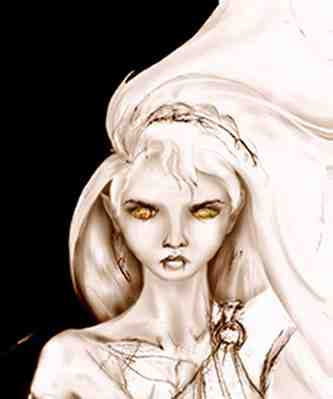 |
Mais que falar sobre o prazer focam-se
hoje sobre os riscos e a morte e o medo, antes alimentado pela superstição
religiosa, agora volta a se instalar no reino da sexualidade sob o signo
da doença.
Mas agora está o menino noutra
fase e em breve se tornará jovem, na plenitude de seu desejo.
Seu corpo e'agora uma usina de hormônios
enlouquecidos, a química da vida grita em suas células.
A voz muda, espinhas na face, pelos no corpo.
E a segunda face do Deus se aproxima.
O menino do pólen se recolhe,
agora é o jovem guerreiro que se aproxima.
O conquistador, o lutador, aquele
que traz em si a virilidade do caçador.
| 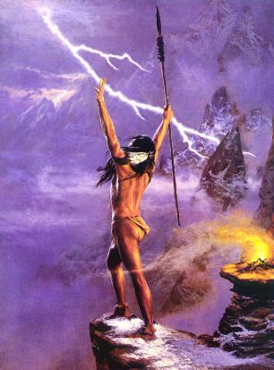 |
É agora que a outra face do
Deus está se manifestando que a busca de afirmar-se perante o grupo
se faz forte, necessária mesmo.
Jogos de conquista, jogos de poder
entre seus pares, grupos, gangs, tudo sintoma desta tribal necessidade
de ter seu lugar no "bando".
Esta fase se prolonga até um
momento impreciso onde a transição da juventude leva a passagem
para a "maturidade" .
É impreciso esse momento, mas
há um instante no qual o jovem guerreiro deixa o campo e chega o
homem maduro, rei de seu reino, senhor de seus domínios,
regente de sua vida que se estabelece.
Outra face do Deus se apresenta agora.
O deus maduro, o Deus de Lammas que
sente a semente cumprir seu ciclo, ser novamente fruto, as espigas de milho
ou tribo plenas, as frutas maduras.
Ele agora é o Deus que constrói,
continuação do Deus que conquista de sua fase anterior.
É na maturidade que cada homem
pode resolver o triângulo dos Deuses em si e ser simultaneamente
o menino do pólen, o jovem Deus conquistador e o Deus
Maduro em um só.
Se conseguir isso será feliz,
realizado, será sempre o amante de sua companheira e quando seus
filhos, frutos de sua semente, sementes em si eles mesmos, nascerem terão
o companheiro que saberá despertar o menino do pólen
em si para acompanhar sensivelmente o caminho daqueles
que a vida colocou sobre sua tutela.
| 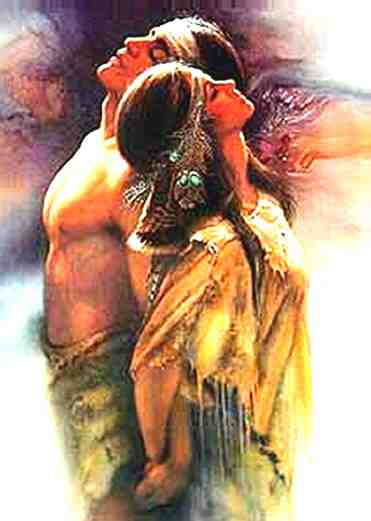 |
Se a mulher realiza a Deusa gerando
uma vida em seu interior, nós homens realizamos o Deus gerando nossos
planos no mundo. Somos todos em certo nível Arthur e Merlyn, mais
Arthur, ou mais Merlyn, de acordo com nossas tendências pessoais,
mas o fato é que existe sempre um reino a ser conquistado, pacificado
e levado ao seu apogeu e está batalha pode ser travada no mundo
circundante ou no nosso interior, pois quer trabalhe
consigo quer com metais, é sempre sob sua essência que o alquimista
está trabalhando.
Assim também é com cada
um de nós, quer travemos batalhas internas, quer as projetemos no
mundo circundante para melhor visualizá-las somos o rei ou o
magista de nosso reino a tabalhar por sua plena manifestação.
E então, se a vida foi plenamente
vivida, se tivemos sensibilidade para perceber cada fase e vive-la intensamente
entraremos na quarta e oculta face
do Deus.
O Deus Sábio, velho, conselheiro,
que tem a experiência em si.
| 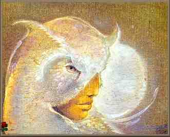 |
Arthur falhou nisso, não chegou
a tanto, enquanto ainda Rei teve seu caminho cortado.
Mas nós não precisamos
falhar, podemos ir até o fim de nossa jornada e perceber que uma
vida intensamente vivida nos realiza e nos realizando nos dá forças
e lucidez para que velhice seja o período da maturidade.
Quando a força de nossos músculos
não for tão plena outras forças interiores estarão
presente para compensar.
Quando a virilidade não estiver
mais em nossa espada fálica, teremos a mesma presente em todo nosso
ser, sensível a força oculta do Deus em nós.
Assim poderemos auxiliar aqueles que
apenas começaram sua aventura de vida, assim podemos revelar a cada
um as quatro faces do Deus, o mistério de suas
fases em cada homem e o segredo de cada passagem.
| 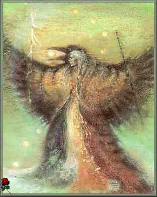 |
Pois se a Eternidade é a Deusa,
ela seria estática sem a presença do Galhudo a estimular
a vida e a transformação.
Pois a Eternidade incriada sempre
existiu e sempre há de existir, mas foi preciso que o Um brotasse
do ZERO sempre existente para que a grande aventura começasse.
E a Deusa e o Deus estão em
nós, em cada fase de nossas vidas mais forte em uma de suas faces.
Ser pagão é isso antes
de mais nada.
Revelar as faces da Divindade em cada
momento de nossa vida.
E então seremos Deuses e Deusas,
nós mesmos, continuando o mistério empolgante de estar vivo...
| 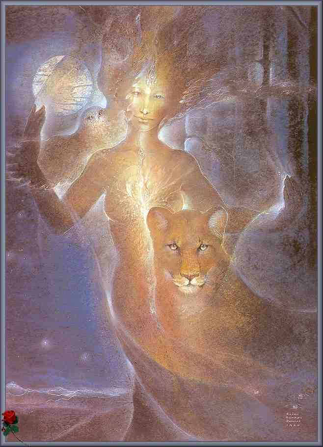 |
|
|
Volta
para
Índice da Tribo
Volta
para
Índice Themas Mágickos
Criado por:
Imagick Edições e
Comunicações Visuais